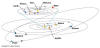
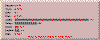
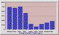
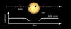
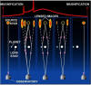
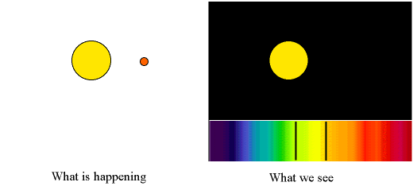
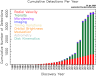

| Terrestrial planets | Jovian planets |
| Mercury, Venus, Earth, Mars | Jupiter, Saturn, Uranus, Neptune |
| smaller size and mass | larger size and mass |
| solid surface | no solid surface |
| higher density (rocks, metals) | lower density (light gases, hydrogen compounds) |
| metallic core and a rocky outer layer | rocky core which resembles the terrestrial planets |
| orbits closely spaced | orbits spaced far apart |
| few (if any) moons, no rings | many moons, rings |
| warmer | cooler |


The age of our solar system has been established to be about 4.6 billions years, based on the following pieces of evidence:
   
Last modified: